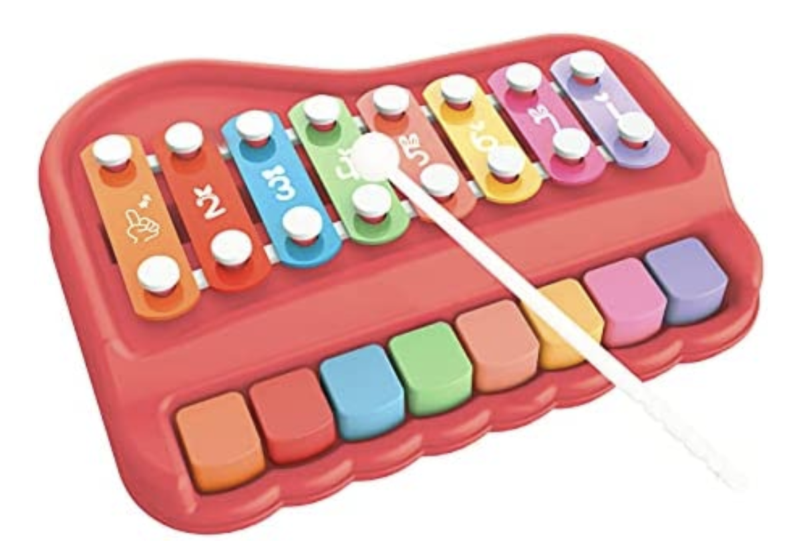

The Self Playing Xylophone
ECE 4760 (Digital Systems Design using Microcontrollers) Final Project
Programmed to play 23 snippets of our favorite songs on a toy xylophone!

Summary: For our final project, we were interested in studying sending PWM signals to servo motors, similar to what we encountered in Lab 3, in a musical context. We developed a system that consists of eight servo motors - each with a xylophone mallet attached to its shaft - that can play a song that is specified by the user. Our self-playing xylophone currently holds 23 songs, ranging from a simple scale to Christmas songs such as the Carol of the Bells to pop songs like Love Story. The user can request a song through inputting its corresponding number into the serial monitor. Our group chose to pursue this project as a fun way to make great use of the baby xylophone toy we had lying around while enjoying some of our favorite songs.
By: Harris Miller, Karina Melgar, Zoe Chen